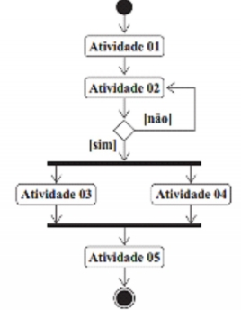
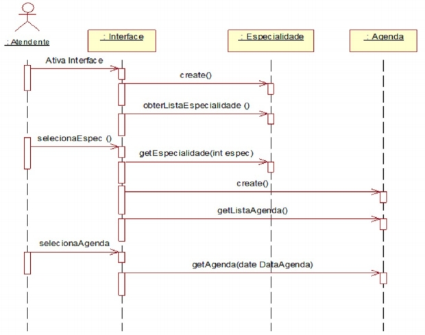

CLIENTES - POLOS

Tenha acesso a provas sem fazer precisar fazer login. Para ter acesso a centenas de simulados de provas para estudar, tudo de forma rápida, simples e segura, faça o login com seu RA e senha. SAIBA MAIS
Disciplina: 685860 - Análise de Sistemas Orientada a Objetos
Questão 1: O diagrama de sequência descreve um cenário de implementação de uma funcionalidade do software. O analista deve contemplar os detalhes necessários ao negócio incluindo os objetosnecessários ao correto comportamento do software. De acordo com essa afirmação, analise as afirmativas a seguir:
I -O diagrama de sequência deve incluir objetos de interface e de comunicação com sistemas externos.
II -A leitura das ações de um diagrama de sequência é bidirecional.
III -Podem incluir instâncias <
Questão 2: Um paradigma é um conjunto de regras que estabelecem fronteiras e descrevem como resolver problemas dentro desta fronteira. Um paradigma ajuda-nos a organizar a e coordenar a maneira como olhamos o mundo. O paradigma da orientação a objetos é uma forma de se desenvolver um sistema de softwareque enxerga que um sistema de softwareé um conjunto de componentes que interagem entre si para resolver um determinado problema. Analise as afirmativas a seguir: I -A orientação a objetos facilita a manutenção de sistemas. II -O aumento do reuso é uma vantagem da orientação a objetos. III -A orientação a objetos está fundamentada em funções e dados. Marque a alternativa correta: A) As afirmativas I e II estão corretas. B) As afirmativas I e III estão corretas. C) As afirmativas II e III estão corretas. D) Apenas a afirmativa I está correta. E) Apenas a afirmativa III está correta.
Questão 3: O diagrama de atividades é um dos diagramas disponíveis na UML (Linguagem de Modelagem Unificada) para a modelagem de aspectos dinâmicos de sistemas e para mapeamento do processo de negócio. Com relação ao diagrama de atividades apresentado, avalie as afirmações a seguir.  I. A atividade 05 será executada se a atividade 03 ou a atividade 04 for concluída. II. A ramificação sequencial existente após a atividade 02 significa que, caso o fluxo seja [não],é necessário que sejam executadas novamente as atividades 01 e 02. III. As atividades 03 e 04 vão ter início ao mesmo tempo, entretanto, não significa que terminarãoao mesmo tempo.IV. Caso o fluxo da ramificação sequencial existente após a atividade 02 tenha o fluxo [sim], a atividade 02 não será mais executada. Marque a alternativa correta: A) Somente as afirmativas I e II estão corretas. B) Somente as afirmativas II e III estão corretas. C) Somente as afirmativas III e IV estão corretas. D) As afirmativas I, II e IV estão corretas. E) As afirmativas I, III e IV estão corretas.
Questão 4: O Modelo de classe de domínio é desenvolvido na fase de análise e representa os objetos, ou classes, inerentes ao domínio do problema que queremos resolver, deixando de lado, nessa visão, detalhes tecnológicos da solução do problema. De acordo com essa afirmação, analise as afirmativas a seguir: I -O diagrama de classes de domínio inclui objetos de interface e controle. II -Num diagrama de classes pode haver relações de associação, dependência e agregação. III -Como boa prática, os atributos de uma classe devem ser privados. Marque a alternativa correta: A) Somente a afirmativa I está correta. B) As afirmativas I e III estão corretas. C) As afirmativas I e II estão corretas. D) Somente a afirmativa III está correta. E) As afirmativas II e III estão corretas.
Questão 5: Um dos principais digramas dinâmicos da UML é o diagrama de sequência que representa a ordem em que os objetos envolvidos no cenário são acionados. Equivalem à lógica da funcionalidade a ser implementada. Sobre o digrama de sequência é correto afirmar: A) Embora sejam digramas dinâmicos, não mostram todos os objetos envolvidos. B) Não podem conter atores dentro do cenário. C) Um objeto não pode acionar um método dele próprio. D) Descreve a troca de mensagens entre os objetos. E) São estáticos no processo de modelagem.
Questão 6: O diagrama de sequência representa a interação entre os objetos envolvidos no cenário de um processo de negócio. Com relação ao diagrama de sequência apresentado a seguir, avalie as afirmaçõesa seguir.

I. A mensagem <
Questão 7: Atualmente existem diversas abordagens para modelagem de processos de negócio, dentre as mais utilizadas podemos citar: A) BPMN e diagrama de casos de uso. B) Diagrama de atividades e BPMN. C) Diagrama de atividades e diagrama de classe. D) Digrama de processo e diagrama de casos de uso. E) Diagrama de sequencia e diagrama de processo.
Questão 8: Requisitos não funcionais descrevem restrições sobre os serviços oferecidos pelo sistema, pois é necessário descrever atributos técnicos do sistema e do ambiente do sistema. Analise as afirmativas a seguir. I -Usabilidade está relacionada à facilidade de uso do sistema. II -Portabilidade refere-se à capacidade de suportar vários sistemas ao mesmo tempo. III -Segurança refere-se à capacidade de prevenir acessos indevidos ao sistema. Marque a alternativa correta: A) As afirmativas I e II estão corretas. B) As afirmativas I e III estão corretas. C) As afirmativas II e III estão corretas. D) Apenas a afirmativa I está correta. E) Apenas a afirmativa III está correta.
Questão 1: O analista de negócio estabelece um elo entre o usuário do sistema de informação e o sistema de informação propriamente dito, estabelecer a ligação entre a área de negócio e a área de TI. A funçãode analista de negócio pode ser desempenhada por qualquer pessoa ou profissional independente do seu cargo na organização.Apresente três áreas no desenvolvimento de sistemas que ele pode atuar.
Questão 10: Leia atentamente a descrição do sistema a seguir e elabore o diagrama de sequência do cenário “realizar empréstimo de livros com sucesso”: Criar um sistema que permita o controle de livros disponíveis na biblioteca da universidade. O sistema permitirá o cadastro de livros com as seguintes informações: título, editora, ano de edição, data de aquisição, local do livro, autor e quantidade. Os alunos que poderão fazer os empréstimos estão cadastrados no Sistema de Registro Acadêmico (SRA) que será acessado pelo sistema de biblioteca para validar se ele existe através do seu RA e retorna o nome do aluno. O sistema deverá permitir aos alunos realizarem empréstimos de livros, após a escolha e identificação ao atendente da biblioteca. Ao efetivar o empréstimo, o sistema deve emitir um comprovante com os livros e a datade devolução prevista (15 dias após o empréstimo). No momento da devolução, o sistema deverá verificar se a entrega está sendo realizada em dia. Caso contrário, deverá calcular a multa de R$ 2,00 por dia de atraso. Todas essas operações são realizadas pelos funcionários da biblioteca.O aluno poderá fazer consulta ao acervo da biblioteca e fazer reserva de livros através da internet.
O Gerenciador completo do seu Polo
Se existe algo que tira a paciência e o sono de qualquer gestor em um negócio, é a demora para obter respostas que deveriam estar disponíveis rapidamente para auxiliar não somente em tomada de decisões como em ações comerciais que tragam dinheiro para a empresa.
Saiba mais
Rua Júlio Câmara, 706 - Anexo 1 - Centro, Afogados da Ingazeira - PE, 56800-000